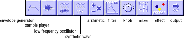

This document provides an overview of the windows that appear when you start ARIA. This helps familiarize you with the names of different tools and windows discussed in this document.
The block palette below the menu bar gives access to the tools you can use to construct patches. The following tools are available (from left to right):

Figure 1: Tools for constructing patches.
Patch document window
The Patch document window is the large window below the tool palette. In it, you can create patches, as explained in the rest of this chapter.
Saving and compiling patch documents
When you save a patch document, ARIA creates a patch file you can later load back into ARIA for further editing. When you compile a patch, on the other hand, ARIA creates a file you can use on the 3DO Station.
Log window
ARIA has a Log window which appears when certain errors occur. If you want to see the Log window when it's not visible, use the Log Window command on the Windows menu.